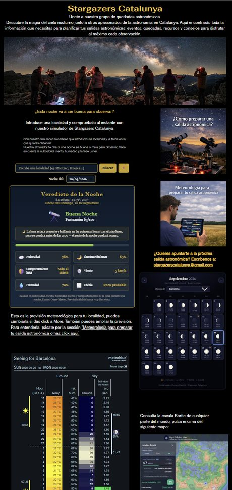

Observando el cielo desde Barcelona, y ayudando a otros a hacer lo mismo.

Me llamo Robert y resido en Barcelona. Soy aficionado a la astronomía desde que era pequeño. Tras contemplar por primera vez un cielo estrellado libre de contaminación lumínica, no he podido dejar de mirar hacia arriba.
He formado parte de la Agrupació Astronòmica de Sabadell, y disfruto por igual de la contemplación a simple vista, con prismáticos y con telescopio. Autor de la web Stargazers Catalunya y coordinador de un grupo de salidas astronómicas por Cataluña.


Un refractor de 70 mm, un Maksutov 127 AZ GoTo para observación planetaria, y un Seestar S50 para astrofotografía de cielo profundo.


Robert Vidal Calvís
Una guía pensada para que cualquiera pueda entender el cielo desde la primera noche: un recorrido por la mitología y la fascinación que ha despertado la contemplación del firmamento en todas las culturas, y por las apps astronómicas y la revolución de los telescopios inteligentes que hoy ponen el cielo al alcance de todos.
Miremos el cielo juntos, con la misma fascinación que me despertó a mí la primera noche de observación, cuando era un niño.

Todo lo que necesitas para planificar tu próxima salida astronómica, en un solo sitio.
Ven a observar con nosotros.
Ver Stargazers Catalunya →